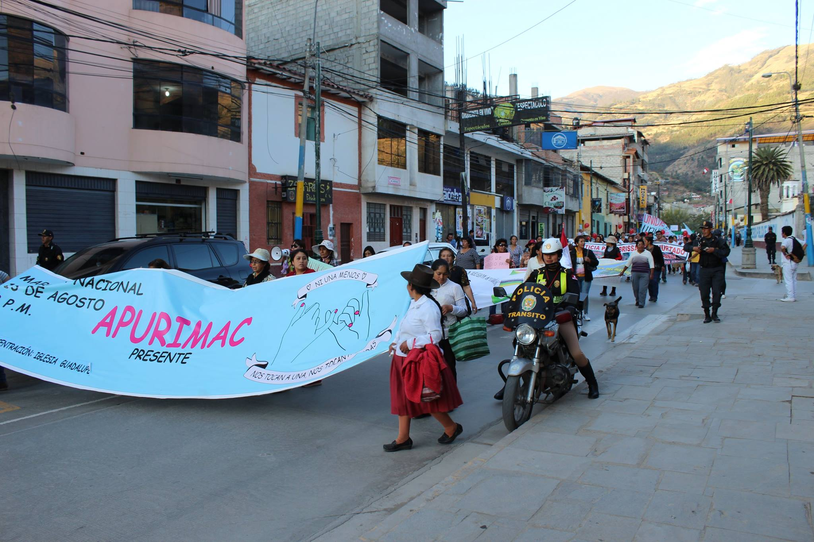
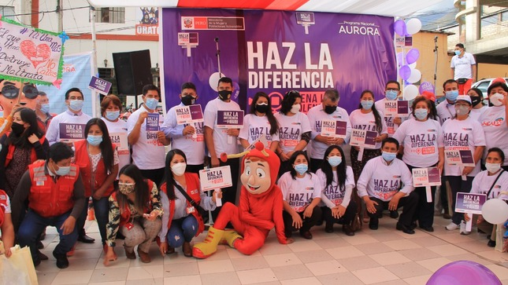

Conoce servicios, recursos y programas de atención y prevención articulados a nivel regional.
Consulta leyes, guías y protocolos para prevención, atención y respuesta institucional.
Accede a una selección digital de alertas, reportes y materiales para difusión pública.
Publicaciones de seguimiento y actualidad institucional.
Piezas visuales para difusión pública y técnica.
Entidades articuladas en la respuesta territorial.
Cobertura territorial del observatorio regional.
El observatorio concentra información, alertas y productos para sostener una mirada territorial y basada en evidencia.
Se fortalecen redes institucionales para prevención, atención y seguimiento de casos con enfoque regional.
Noticias, infografías, videos y repositorio documental permiten una comunicación más clara con la ciudadanía.
Nuevo paquete de infografías con indicadores territoriales.
Actualización de agenda institucional y campañas vigentes.
Seguimiento a mesas técnicas provinciales y articulación regional.
Acceso a recursos, contacto institucional y canales de orientación.
Información centralizada para ciudadanía, equipos técnicos y aliados.
Campañas, mesas técnicas, jornadas de socialización y actualización de evidencias regionales.
Protocolos, lineamientos y reportes para fortalecer el trabajo técnico y la respuesta institucional.
Conocer más